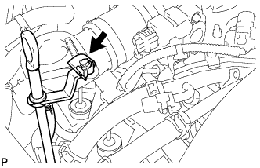
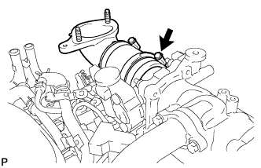
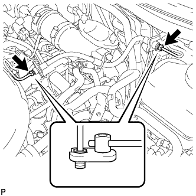
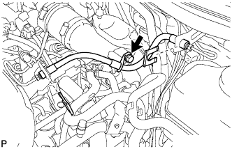
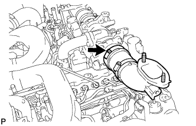
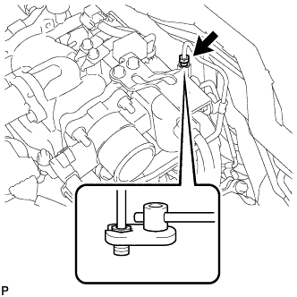
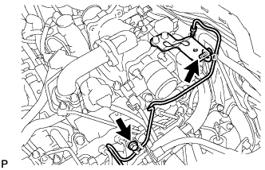
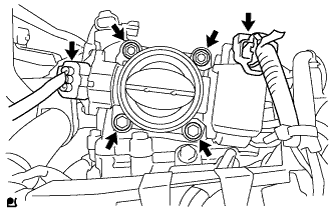
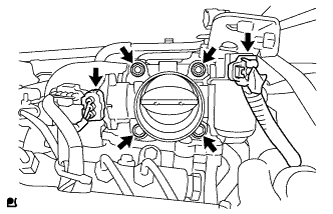

DIESEL THROTTLE BODY > REMOVAL |
| 1. DISCONNECT CABLE FROM NEGATIVE BATTERY TERMINAL |
| 2. REMOVE INTERCOOLER ASSEMBLY |
Remove the intercooler (Click here).
| 3. DISCONNECT NO. 2 ENGINE OIL LEVEL DIPSTICK GUIDE |
 |
Remove the bolt and disconnect the oil level dipstick guide.
| 4. REMOVE AIR TUBE SUB-ASSEMBLY RH |
 |
Loosen the hose clamp.
Remove the air tube from the throttle body.
| 5. DRAIN CLUTCH FLUID (for Manual Transmission) |
| 6. REMOVE CLUTCH HOSE (for Manual Transmission) |
 |
Disconnect the 2 flexible hose tubes from the clutch hose with a 10 mm union nut wrench while holding the flexible hose with a wrench.
Remove the 2 clips.
 |
Remove the bolt and clutch hose.
| 7. REMOVE AIR TUBE SUB-ASSEMBLY LH |
 |
Loosen the hose clamp.
Remove the air tube from the throttle body.
| 8. REMOVE TUBE CONNECTOR TO FLEXIBLE HOSE TUBE (for Manual Transmission) |
 |
Using a 10 mm union nut wrench, disconnect the tube connector to flexible hose tube from the clutch tube to release cylinder 2 way.
 |
Remove the 2 bolts and tube connector to flexible hose tube.
| 9. REMOVE DIESEL THROTTLE BODY ASSEMBLY RH |
 |
Disconnect the throttle position sensor connector.
Disconnect the throttle motor connector.
Remove the 2 bolts, 2 nuts and throttle body.
Remove the gasket from the intake pipe.
| 10. REMOVE DIESEL THROTTLE BODY ASSEMBLY LH |
 |
Disconnect the throttle position sensor connector.
Disconnect the throttle motor connector.
Remove the 2 bolts, 2 nuts and throttle body.
Remove the gasket from the intake pipe.